01SandOverview
Where in the world was this photo taken?
DIG answers by generating a location representation instead of a coordinate. Conditioned on the image, a rectified flow carries Gaussian noise to the embedding of a pretrained location encoder, and a learned decoder maps that embedding back to latitude and longitude.
Diffusion for Image Geolocalization (DIG) in the location representation space. Conditioned on the image, a rectified flow transports noise to location embeddings, which a learned decoder maps to coordinates on the globe.
Your turn
Can you beat DIG?
Drop your X where you think this photo was taken, then lock it in. There’s no clock: look back and forth as long as you like.
Each photo is one of 500 picked at random from the OSV-5M test set.
Arrow keys pan, plus and minus zoom, and Enter drops your X at the center of the map.
Unrolling the map…
Drop your X on the map.
Taken in .
The game needs JavaScript to run.
Photos: OSV-5M / Mapillary contributors, CC BY-SA 4.0. DIG’s guesses for these photos were computed offline.
02DirtMotivation
Coordinates know where. Location embeddings also know what.
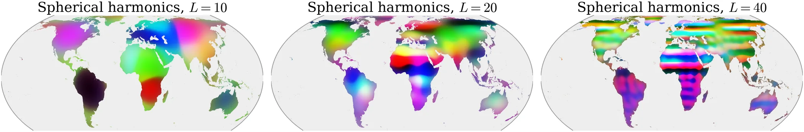
Position alone: two places are similar only if they are nearby.
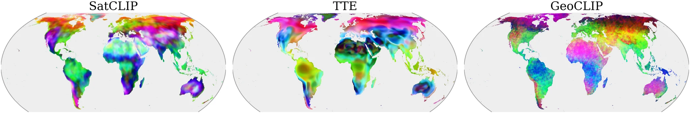
Aligned with imagery: similar places look alike, even continents apart.
Each map colors land by the first three independent components (ICA) of that representation.
03GravelMethod
Diffuse in the embedding. Decode to the globe.
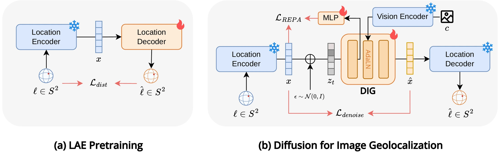
Overview. (a) Location Autoencoder (LAE) pretraining: a decoder learns to recover coordinates from the embeddings of a frozen location encoder. (b) DIG, conditioned on the image, generates location embeddings, which the frozen LAE decoder maps back to coordinates.
-
1
Location Autoencoder
A frozen location encoder is paired with a residual-MLP decoder trained to minimize great-circle distance over land coordinates. For GeoCLIP's high-frequency features, Levenberg–Marquardt steps through the differentiable encoder refine the decoded estimate.
67.91% → 99.10% within 1 km after one refinement step
-
2
Diffusion in LAE space
DIG is a residual MLP with AdaLN, conditioned on concatenated StreetCLIP and DINOv3 features. It is trained with rectified flow, predicting and regressing the clean embedding (x-prediction, x-loss), with REPA aligning an intermediate block to the location representation.
-
3
Sample & decode
From Gaussian noise, 50 Euler steps with classifier-free guidance (s = 3) produce a location embedding. The LAE decoder turns it into latitude and longitude. No reference gallery is needed.
04StoneSampling
Watch a sample find its spot.
Drag t from noise to data. The heatmap is the cosine similarity between DIG’s latent and location embeddings across the globe. At t = 1, the generated embedding retrieves real photos taken near the predicted spot.
Query
Cloud Gate is highly localizable: the similarity map resolves to a sharp peak, and the generated embeddings retrieve the sculpture itself or the Chicago skyline from within 0.4 km.
A forest track near Baie-Saint-Paul offers few cues, and its boreal forest also characterizes southern Scandinavia. The map stays diffuse over both, and one trajectory commits to the wrong continent, yet it retrieves a similar forest road. The error is semantically intuitive.
Sampling in LAE space
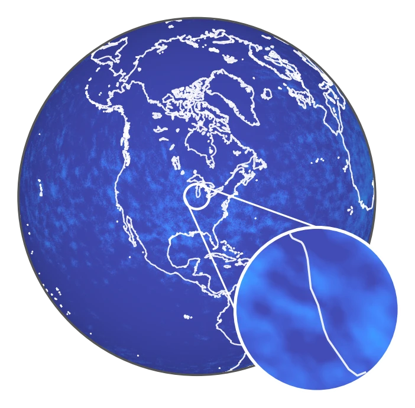
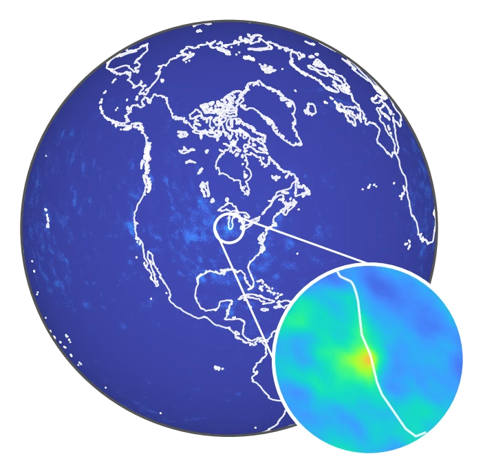
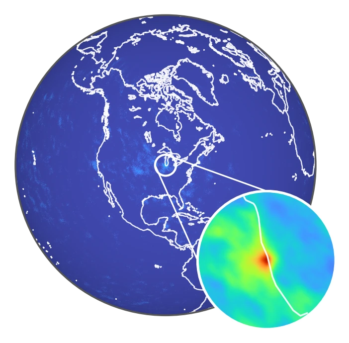
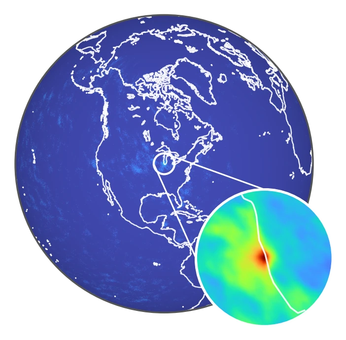
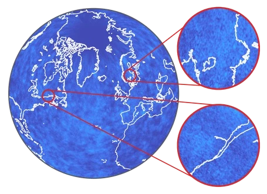
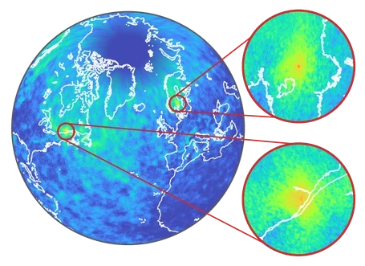
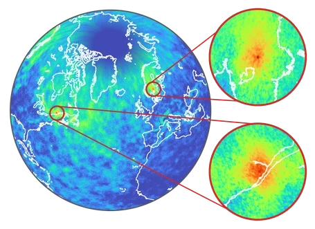
Retrieved with the generated embedding
- 0.4 km
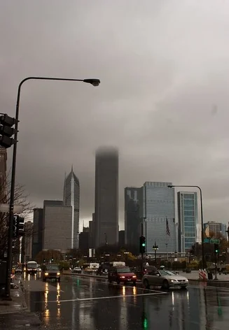
0.4 km- 0.4 km
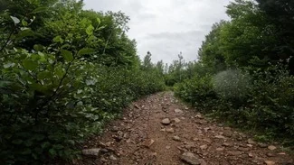
43 km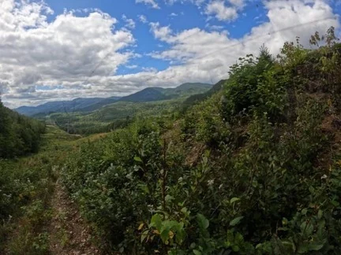
55 km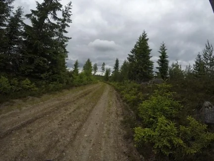
5,363 km
05BedrockResults
A new state of the art for database-free geolocalization.
| Method | GeoScore ↑ | Dist. (km) ↓ | Accuracy (%) ↑ | ||
|---|---|---|---|---|---|
| Country | Region | City | |||
| Deterministic | |||||
| SC 0-shot | 2273 | 2854 | 38.4 | 20.8 | 14.8 |
| Regression | 3028 | 1481 | 56.5 | 16.3 | 0.7 |
| ISNs | 3331 | 2308 | 66.8 | 39.4 | 4.2 |
| Hybrid | 3361 | 1814 | 68.0 | 39.4 | 5.9 |
| SC Retr. | 3597 | 1386 | 73.4 | 45.8 | 19.9 |
| HierLoc | 3963 | 861 | 82.9 | 55.0 | 23.3 |
| Generative | |||||
| Uniform | 131 | 10052 | 2.4 | 0.1 | 0.0 |
| vMFMix | 1746 | 5662 | 34.2 | 11.1 | 0.3 |
| vMF | 2776 | 2439 | 52.7 | 17.2 | 0.6 |
| FM ℝ3 | 3688 | 1149 | 74.9 | 40.0 | 4.2 |
| Diff ℝ3 | 3762 | 1123 | 75.9 | 40.9 | 3.6 |
| RFM 𝒮2 | 3767 | 1069 | 76.2 | 44.2 | 5.4 |
| LocDiff | – | – | 77.0 | 46.3 | 11.0 |
| DIG-XL (ours) | |||||
| GeoCLIP | 4095 | 851 | 83.4 | 60.1 | 24.6 |
| SatCLIP | 4125 | 912 | 83.4 | 61.0 | 22.4 |
| TTE | 4129 | 849 | 83.5 | 57.4 | 18.4 |
Official OSV-5M training and test splits. Dist. is mean distance. Bold is best, italics second best. DIG-XL answers with one guided sample; the switch shows the medoid of 16 guided samples.
| Method | Im2GPS3k | YFCC4k | ||||||||
|---|---|---|---|---|---|---|---|---|---|---|
| 1 km | 25 km | 200 km | 750 km | 2500 km | 1 km | 25 km | 200 km | 750 km | 2500 km | |
| Deterministic | ||||||||||
| PlaNet | 8.5 | 24.8 | 34.3 | 48.4 | 64.6 | 5.6 | 14.3 | 22.2 | 36.4 | 55.8 |
| CPlaNet | 10.2 | 26.5 | 34.6 | 48.6 | 64.6 | 7.9 | 14.8 | 21.9 | 36.4 | 55.5 |
| Translocator | 11.8 | 31.1 | 46.7 | 58.9 | 80.1 | 8.4 | 18.6 | 27.0 | 41.1 | 60.4 |
| GeoDecoder | 12.8 | 33.5 | 45.9 | 61.0 | 76.1 | 10.3 | 24.4 | 33.9 | 50.0 | 68.7 |
| PIGEOTTO | 11.3 | 36.7 | 53.8 | 72.4 | 85.3 | 10.4 | 23.7 | 40.6 | 62.2 | 77.7 |
| GeoCLIP | 14.1 | 34.5 | 50.7 | 69.7 | 83.8 | 9.6 | 19.3 | 32.6 | 55.0 | 74.7 |
| HierLoc | 11.3 | 43.8 | 58.4 | 74.1 | 85.1 | 8.4 | 30.2 | 43.3 | 61.7 | 75.8 |
| Img2Loc | 17.1 | 45.1 | 57.9 | 72.9 | 84.7 | 14.1 | 29.6 | 41.4 | 59.3 | 76.9 |
| G3 | 16.7 | 40.9 | 55.6 | 71.2 | 84.7 | 24.0 | 35.9 | 47.0 | 64.3 | 78.2 |
| GeoRanker | 18.8 | 45.1 | 61.5 | 76.3 | 89.3 | 32.9 | 43.5 | 54.3 | 69.8 | 82.5 |
| Generative | ||||||||||
| vMFMix | – | – | – | – | – | – | 0.4 | 8.8 | 20.9 | 41.0 |
| vMF | – | – | – | – | – | – | 4.8 | 15.0 | 30.9 | 53.4 |
| Diff ℝ3 | 0.0‡ | 16.2‡ | 46.8‡ | 63.1‡ | 79.1‡ | 0.0‡ | 11.1 | 37.7 | 54.7 | 71.9 |
| FM ℝ3 | 2.1‡ | 29.1‡ | 43.8‡ | 60.8‡ | 78.6‡ | 2.0‡ | 22.1 | 35.0 | 53.2 | 73.1 |
| RFM 𝒮2 | – | – | – | – | – | – | 23.7 | 36.4 | 54.5 | 73.6 |
| RFM10M 𝒮2 | 8.2‡ | 37.2‡ | 51.3‡ | 66.8‡ | 81.7‡ | 9.8‡ | 33.5 | 45.3 | 61.1 | 77.7 |
| LocDiff | 10.9 | 34.0 | 53.3 | 72.5 | 85.2 | – | 33.3 | 46.7 | 65.2 | 79.9 |
| LocDiff-H | 15.3 | 36.5 | 56.4 | 75.2 | 87.4 | – | – | – | – | – |
| DIG-XL (ours), trained on MP16-Pro | ||||||||||
| TTE | 3.9 | 34.5 | 56.3 | 73.0 | 85.5 | 1.8 | 23.4 | 47.7 | 65.0 | 77.6 |
| SatCLIP | 2.4 | 36.4 | 55.5 | 72.0 | 84.8 | 1.7 | 26.2 | 47.7 | 64.3 | 78.9 |
| GeoCLIP | 17.3 | 41.6 | 56.2 | 72.0 | 86.3 | 17.5 | 31.6 | 45.0 | 63.4 | 78.8 |
| GeoCLIP + GeoRanker | 20.1 | 47.6 | 64.1 | 78.1 | 89.6 | 34.0 | 45.5 | 56.8 | 71.9 | 83.8 |
| DIG-XL (ours), trained on YFCC-44M | ||||||||||
| TTE | 2.2 | 36.0 | 59.6 | 74.9 | 87.3 | 0.9 | 30.1 | 55.3 | 70.8 | 82.7 |
| SatCLIP | 3.4 | 39.3 | 60.3 | 75.4 | 87.4 | 2.7 | 36.6 | 58.4 | 72.0 | 82.7 |
| GeoCLIP | 20.2 | 45.4 | 58.4 | 73.6 | 86.8 | 30.1 | 47.5 | 58.3 | 71.1 | 82.9 |
| GeoCLIP10M | 21.9 | 48.6 | 60.8 | 75.3 | 87.6 | 41.9 | 59.7 | 67.9 | 77.1 | 86.1 |
Accuracy (%) within distance thresholds; bold is best. 10M denotes training for 10M steps; ‡ reimplementation with public weights.
06TreasureCitation
Shiver me timbers!
You found the treasure! If you find DIG useful, please consider citing it:
@article{wei2026dig,
title = {X Marks the Spot: Diffusion for Image Geolocalization
with Location Representations},
author = {Wei, Brian and Hsu, Chih-Chuan and Gao, Tianyi and Cher, Daniel
and Xing, Eric and Beaulieu, Danielle and Jacobs, Nathan},
journal = {arXiv preprint arXiv:2611.13180},
year = {2026}
}
This work was heavily inspired by PLONK (Dufour et al., CVPR 2025) and RAE (Zheng et al., ICLR 2026).
This research used the TGI RAILs advanced compute and data resource, which is supported by the National Science Foundation (award OAC-2232860) and the Taylor Geospatial Institute. This work is also supported by the AI-ACCESS National Research Traineeship, funded by the National Science Foundation (award DGE-2244165).